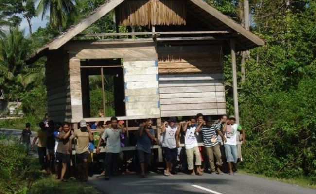

Tradisi Memindah Rumah Suku Bugis
Berpindah ke tempat tinggal baru, dengan barang-barang yang dikemas secara aman lalu dikirim. Itulah yang umum terjadi di masyarakat. Namun, di Suku Bugis provinsi Sulawesi Selatan ada yang unik dari proses pindah rumah, yaitu memindahkan rumah beserta isinya. Iya, memindahkan rumah. Caranya dengan mengangkat rumah secara gotong-royong, dan memindahkannya ke tempat baru. Itu kalau jaraknya jauh, tapi kalau jarak pindahannya dekat, tiang-tiang di bawah rumah akan dipasangi ban dan rumah tinggal didorong saja sampai lahan barunya.
Mappalette Bola nama tradisi ini, dan sudah berlangsung sejak zaman nenek moyang Suku Bugis. Tradisi angkat rumah ini dilakukan, karena bagi Suku Bugis rumah adalah tanah leluhur mereka, sehingga harus tetap dijaga keutuhannya secara turun menurun. Itulah sebabnya rumah benar-benar dipindah, seluruhnya bersama perabotan di dalamnya. Untuk melakukan Mappalette Bola, pertama-tama harus dipimpin oleh ketua adat setempat. Beliau akan memimpin doa, dan menentukan irama langkah kaki para pengangkat rumah Ini sangat penting, karena jika para pengangkat tidak kompak, maka rumah akan sangat sulit diangkat.
Hanya warga laki-laki yang boleh melakukan ini, sedangkan para perempuan bertugas memasak untuk memberi asupan energi para pengangkat rumah. Jajanan khas Suku Bugis seperti kue bandang, baronggo, suwella, disertai teh hangat dan kopi biasanya turut menghiasi tradisi ini.